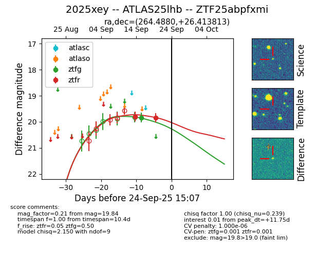
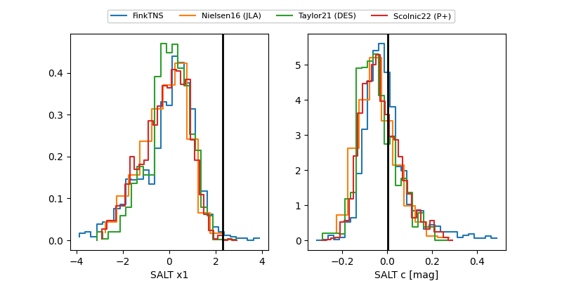

FINK: ZTF25abpfxmi
Lasair: ZTF25abpfxmi
ALeRCE: ZTF25abpfxmi
TNS: 2025xey
YSE: 2025xey
ZTF25abpfxmi (ztf,fink)
2025xey (tns,yse)
ATLAS25lhb (atlas)
equatorial (ra, dec) = (264.4880,+26.41381)
galactic (l, b) = (50.3834,+27.00480)


last ztfg=19.84, ztfr=19.84
1 ztfg, 2 ztfr detections